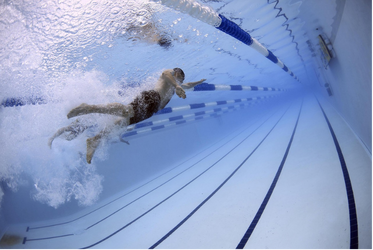
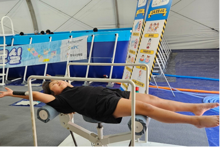

대한수상안전협회는 초등학교 의무교육과목 중 하나인 생존수영에 대한 공공 서비스 및 위탁교육을 진행하고 있습니다. 학생들을 수영장으로 인솔하여 지도하는 것이 아닌, 이동형 수영장과 안전 설비를 갖추고 직접 학교에 찾아가 시설을 설치하고 교육을 실시하여, 수영 실기 교육이 어려운 학교를 대상으로 이동형 생존수영 교실을 통해 모든 학생들의 교육 복지 실현을 이뤄내는데 힘쓰고 있습니다.
이뿐만 아니라, 전국의 특수아동을 위한 맞춤형 생존수영 교육 프로그램과 설비를 갖추어 진정한 교육 복지 실현을 이뤄내고자 10가지 이상의 맞춤형 교육 프로그램을 개발·도입하였고, 이를 통해 주요 협력사인 에쓰엔피씨와 한국수난학회에 생존수영 교육 프로그램을 제안하고 있습니다.
그 밖에 생존수영의 중요성을 널리 알리기 위해, 전국 자치단체와 협력하여 생존수영캠프(교실) 등의 행사를 추진 중에 있으며, 교육 진행 시 발생할 수 있는 여러 안전사고를 사전에 예방하기 위한 매뉴얼을 연구·개발·보급하여, 안전한 교육 진행을 위해 최선을 다하고 있습니다.
외에도 물 적응에 어려움을 겪는 아이들을 위해 실용신안을 등록한 생존수영 영법 보조기구 “플러미”를 제작하여 실제 교육현장에서 적극 활용함으로써, 모든 아이들이 함께할 수 있는 교육환경을 만들고 있습니다.

